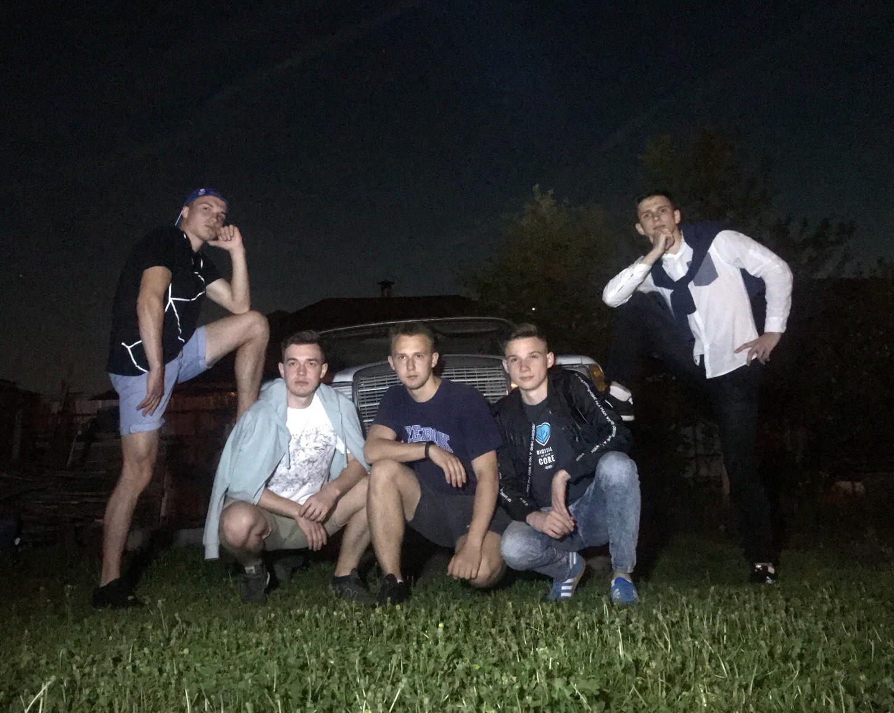
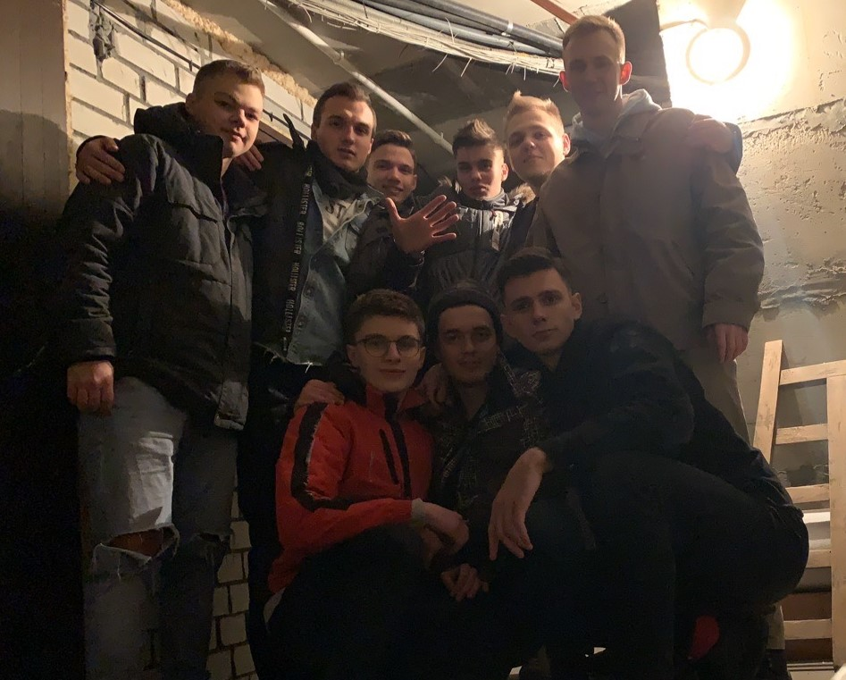
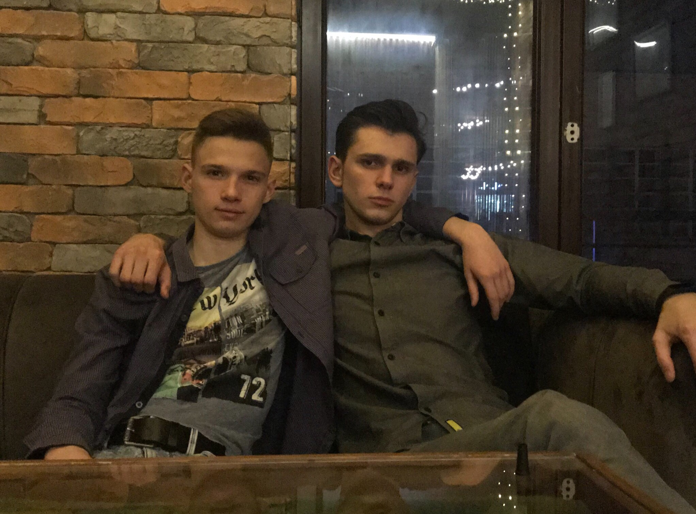
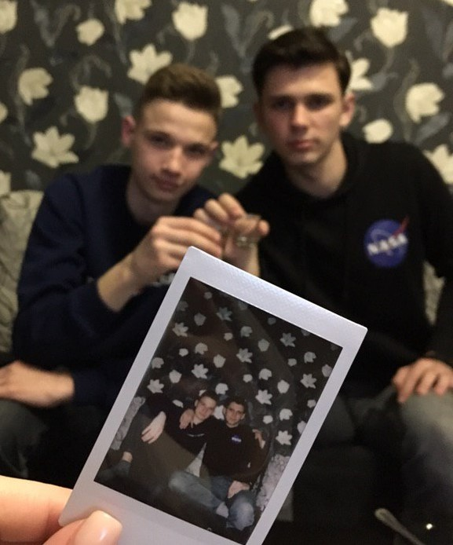

У меня есть много друзей . Я с ними дружу с раннего детства. С некоторыми я познакомился еще в садике ,
с кем-то еще в первом классе.У нас дружная компания :
мы хорошо знаем друг друга и всегда поддерживаем в трудную минуту.

После окончания школы мы разъехались по разным городам и странам , кто-то уехал жить в Польшу,
кто-то учится в Россию , а кто-то остался в родном Бресте.
Но мы не забываем друг друга и каждый год собираемся на Новый год вместе ,
а также проводим совместно летние каникулы .

Но всё-таки лучшим моим другом является - Игорь. С ним мы познакомились еще в далеком 2007 году ,
когда пошли в первый класс. Мы с ним вместе учились до 10 класса. Но после я ушел в лицей,
однако это никак не сказалась на нашей дружбе и мы продолжили также хорошо общаться , как и раньше .

При встрече с ним, мы всегда отлично проводим время , обсуждаем последние новости и делимся впечетлениями
за прошешедшие недели. Он один из немногих друзей, кто остался учиться в Бресте. И это здорово,
т.к. всегда есть человек , с которым я могу встретиться по приезду домой.